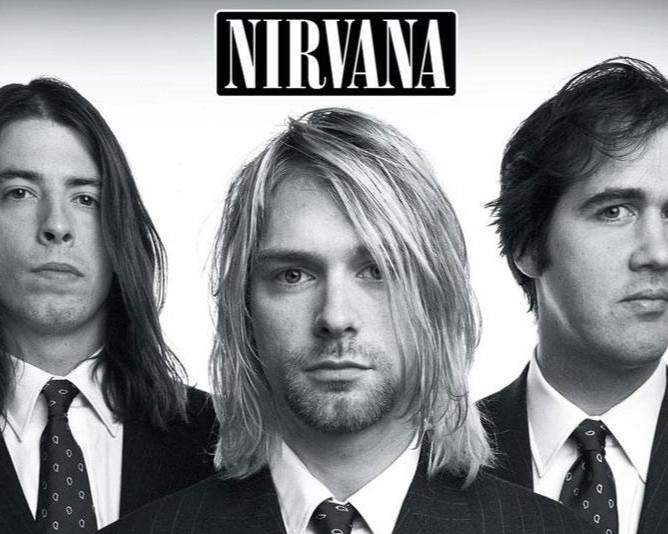
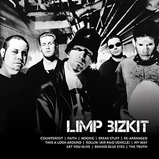
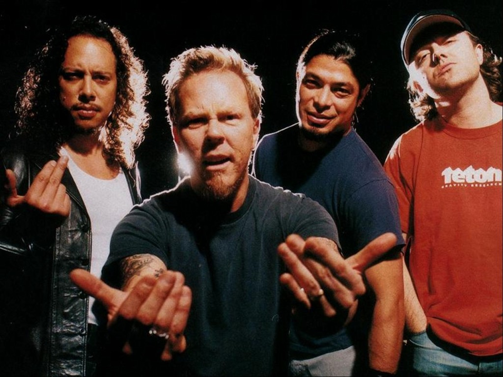

The Smashing Pumpkins - an American alternative rock band formed in Chicago in 1988,
best known for their diverse, densely layered sound that was highly influential in the 1990s.

Nirvana was an American rock band formed in Aberdeen, Washington, in 1987. Founded by lead singer and guitarist Kurt Cobain and
bassist Krist Novoselic, later on recruiting Dave Grohl in 1990.

Limp Bizkit is an American nu metal band from Jacksonville, Florida. The band consists of lead vocalist Fred Durst,
drummer John Otto, guitarist Wes Borland, and turntablist DJ Lethal. The band's musical style is most recognized by Durst's angry vocal delivery
and Borland's sonic experimentation. The band has been nominated for three Grammy Awards, sold 40 million records worldwide, and won several other
awards.

Metallica is an American heavy metal band. It was formed in Los Angeles in 1981 by vocalist/guitarist James Hetfield and drummer Lars Ulrich, and has
been based in San Francisco for most of its career. The band's fast tempos, instrumentals and aggressive musicianship made them one of the founding
"big four" bands of thrash metal, alongside Megadeth, Anthrax and Slayer. Metallica's current lineup comprises founding members and primary
songwriters Hetfield and Ulrich, longtime lead guitarist Kirk Hammett and bassist Robert Trujillo.